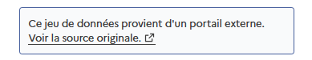
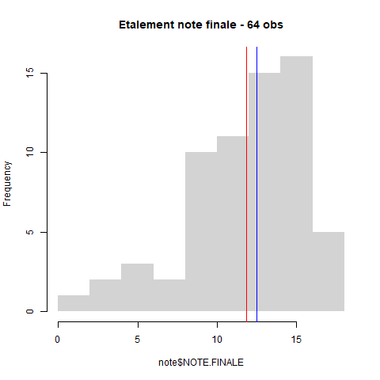

Introduction
1 Intitulé et déroulé du cours
“L5GEABIM Analyses bivariées et multivariées”
| Num.cours | date | thème | outil | exercice..nb.pts. |
|---|---|---|---|---|
| 1 | 15/09/25 | statistique univariée : base | tableur | 1 |
| 2 | 22/09/25 | statistique univariée : indicateurs | 2 | |
| 3 | 29/09/25 | bivariée : base + régression début | 2 | |
| 4 | 06/10/25 | régression fin + khi début (tableau de contingence) | 2 | |
| 5 | 13/10/25 | khi2 | 2 | |
| 6 | 20/10/25 | initiation R | R | NA |
| NA | 27/10/25 | CONGES | NA | |
| 7 | 03/11/25 | initiation R / boite à moustaches | 1 | |
| 8 | 10/11/25 | initiation R / variance + sujet DM | NA | |
| 9 | 17/11/25 | multivariée : régression linéaire multiple | NA | |
| 10 | 24/11/25 | multivariée : analyse factorielle | NA | |
| 11 | 01/12/25 | multivariée : classification | NA | |
| 12 | 08/12/25 | questions autour du devoir maison. Devoir à rendre le 12 au plus tard. | NA | |
| 13 | 15/12/25 | révisions | NA | |
| 14 | Entre 6 et 16 janvier | partiel | NA |
2 La donnée
2.1 Où les trouver ?
Au départ les données sur les finances des communes
https://www.data.gouv.fr/datasets/comptes-des-communes-2017-2024/
2.2 Préparer les données
23 millions d’observations au total, un fichier de 6 G°de données
 voir la source originale
Portail données
https://data.ofgl.fr/explore/dataset/
Comptes consolidées, sur le département choisi
data <- read.csv2("data/ofgl-base-communes-consolidee.csv")
names(data)
head(data)
# combien d'enregistrement par ville et par exercice ?
table(data$Code.Insee.2024.Commune, data$Exercice)
# filtre sur l'année
data <- data [ data$Exercice == 2024,]
# sauvegarde de la donnée
write.csv(data [,c(16,20,21,28)], "data/data93_2024.csv", fileEncoding = "UTF-8")
table(data$Agrégat)Portail cartographie
Il est plus facile d’utiliser l’outil proposé par l’Observatoire des finances et de la gestion publique locale.
3 Présentation rapide (vous êtes nombreux !)
3.1 Qui sont les étudiants ?
- 84 étudiants inscrits sur 3 cours (70 présents environ)
Les questions posées sont sur le passé / présent / futur des étudiants, leur appétence en stats
etudiant <- read.csv("data/TD3_stats_2025.csv", fileEncoding = "UTF-8")
etudiant2 <- read.csv("data/tdLundi.csv", fileEncoding = "UTF-8")
names(etudiant)
names(etudiant2)
names(etudiant2)[1] <- 'prenom'
names(etudiant2)[4] <- 'appetence'
etudiant2 <- etudiant2 [, names(etudiant)]
etudiant <- rbind(etudiant, etudiant2)
etudiant <- etudiant [!is.na(etudiant$prenom),]
table(etudiant$groupe, useNA = "always")
write.csv(etudiant, "data/etudiant.csv", fileEncoding = "UTF-8")etudiant <- read.csv("data/etudiantModifie.csv", fileEncoding = "UTF-8")
png("img/quisontils.png", width = 10000, height = 10000, res=1000)
#par(mar = c(2,16,2,4))
par(mfrow = c(2,2))
for (i in c(3,4,6,7)){
(mar = c(2,30,2,4))
barplot(table(etudiant [,i]), border = NA,
horiz = T, las = 2, cex.names = 0.8,
main = names (etudiant) [i])
}
dev.off()
3.2 Présence et rendu des devoirs : chiffres clés
3.2.1 Effectif et cours
presence <- read.csv("data/presence.csv")
knitr::kable(presence)
par(mfrow = c(3,1))
barplot(presence$TD1~presence$Cours, beside = T, main = "Evolution de la présence groupe 1", xlab = "cours", ylab = "nb"
, border = NA, legend = F)
barplot(presence$TD2~presence$Cours, beside = T, main = "Evolution de la présence groupe 2", xlab = "cours", ylab = "nb"
, border = NA, legend = F)
barplot(presence$TD3~presence$Cours, beside = T, main = "Evolution de la présence groupe 3", xlab = "cours", ylab = "nb"
, border = NA, legend = F)3.2.2 Les rendus d’exercices
data <- read.csv("data/notesDM1_4.csv", na.strings = "-")
data <- data [, c(2:5)]
data <- data [, c(4,1,3,2)]
titre <- c("1_distribution", "2_univarié", "3_regression", "4_contingence")
png("img/rendu.png", width = 1000, height = 1000, res = 100)
par( mfrow = c(2,2))
tot <- length(data)
i <-1
for (i in c(1:tot)){
tmp <- table(data [,i])
barplot(tmp, cex.names = 0.8, las = 1,
main = paste0(titre [i], " (", sum(tmp), " observations)"), border = NA, col = "wheat")
}
dev.off()
- Le critère externe : des points faciles ?
le nom du fichier
le temps du rendu (avant la limite)
- Augmentation des erreurs avec l’exercice 4
Attention à la consigne !
3.3 Notes finales
note <- read.csv("data/noteFinales.csv", fileEncoding = "UTF-8", na.strings = c("EN ATTENTE", "NA","-"), dec = ",")
summary(note)
png("img/noteFin.png")
hist(note$NOTE.FINALE, main = "Etalement note finale - 64 obs", freq = T, border = NA)
abline(v = mean(note$NOTE.FINALE, na.rm = T), col = "red")
abline(v = median(note$NOTE.FINALE, na.rm=T), col = "blue")
dev.off()
4 Ressources autre que la bibliographie officielle
2 cours universitaires disponibles sur internet
- http://www.ipt.univ-paris8.fr/vgodard/enseigne/statisti/framstat.htm
- http://grasland.script.univ-paris-diderot.fr/STAT98/STAT98.htm
Pour R, la base de tout est
R et espace (https://archives.framabook.org/r-et-espace/index.html)
L5GEABIM Analyses bivariées et multivariées